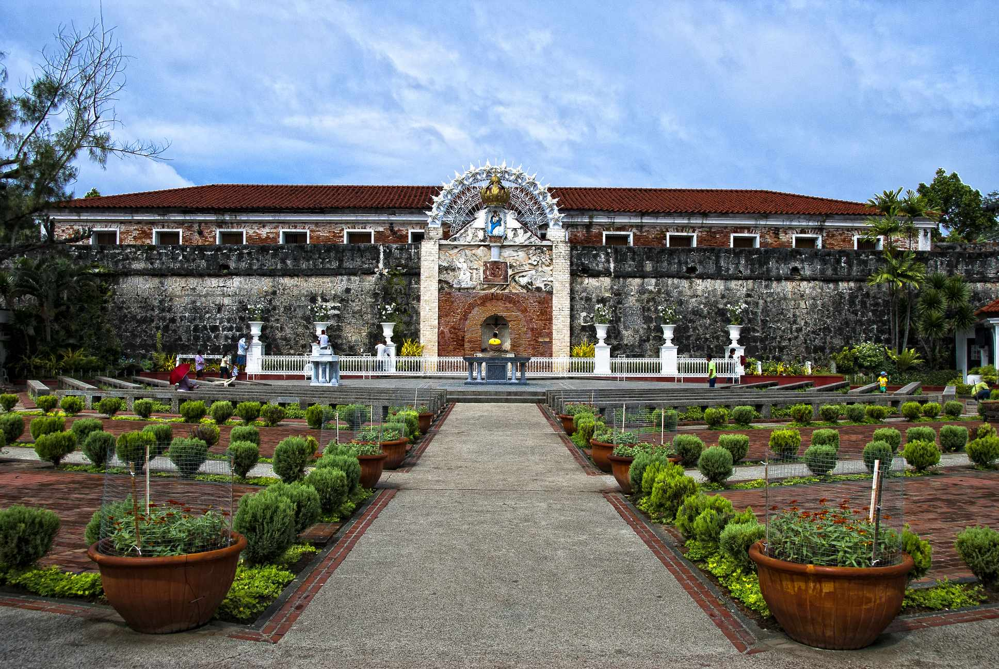
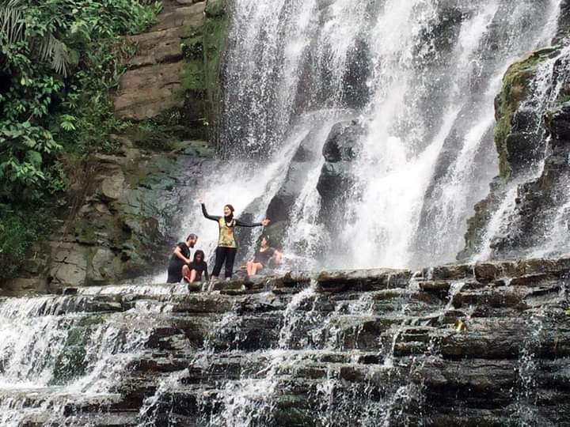
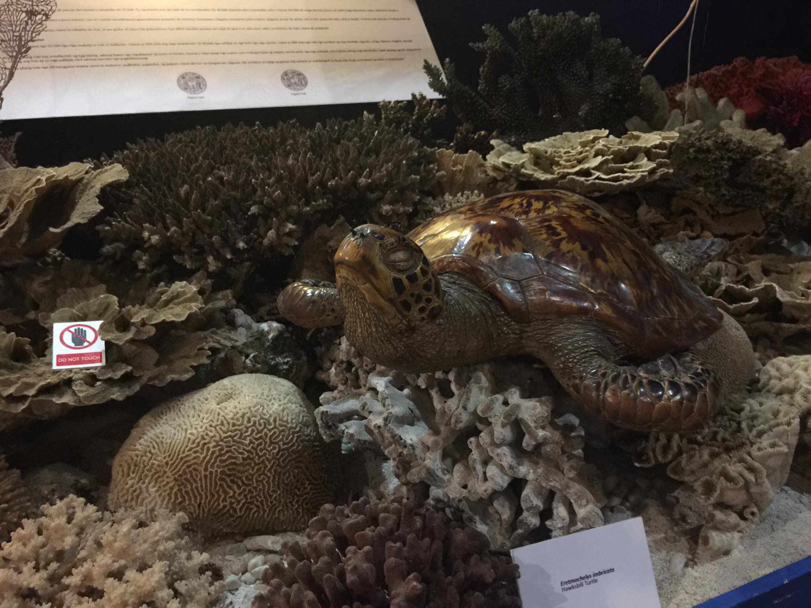
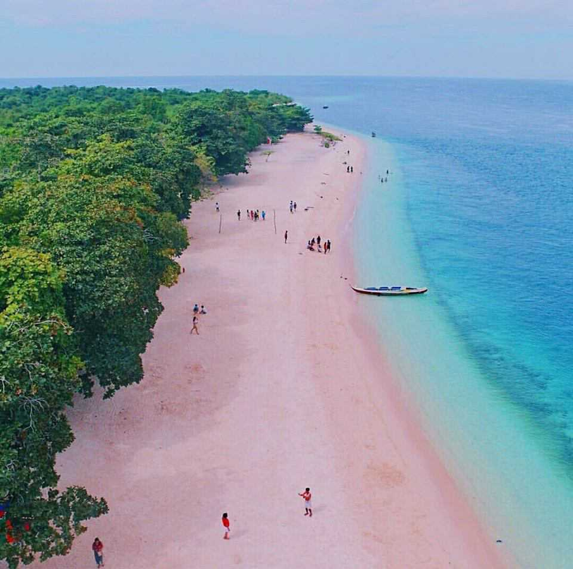
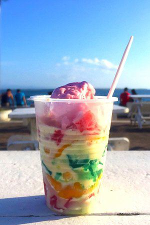

Here are some Places in the Zamboanga City
-
Peakview Café

-
Merloquet Falls

Fort Pilar Shrine Museum

Grande Santa Cruz Island

Satti
Knickerbocker

Fort Pilars as Zamboanga Cityndmark and housSpanishrine to Our Lady of the Pillar, the city's patroness. Visitors can explore the fort's architecture, cannons, and museum, learning about Zamboanga's history and enjoying scenic views of the sea.
Merloquet Falls is a stunning waterfall that flows down a rock formation and is surrounded by lush flora. The falls are about 68 kilometers east of Zamboanga City in Sibulao. The falls are accessible by a lovely drive through the countryside and a short trek through the forest.
Fort Pilar Shrine Museum in Zamboanga City a cultural and historical site within ForFort Pilareaturing exhibits and artifacts that highlight the city's heritage and history. Visitors can explore the museum to learn about Zamboanga's past and diverse cultural influences.
Great Santa Cruz Island is a small inhabited island in Zamboanga City in the southern region of the Philippines that is famous for its pink coralline sand.
Here are some Foods in the Zamboanga City